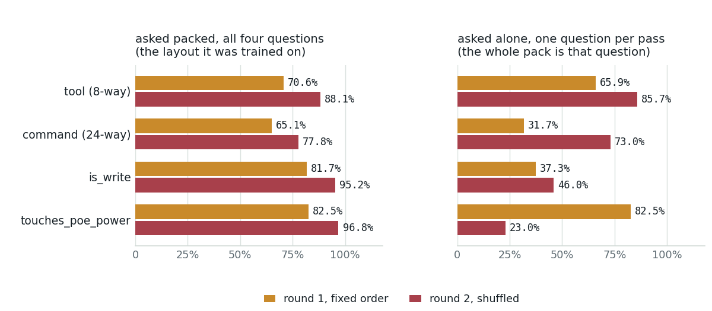
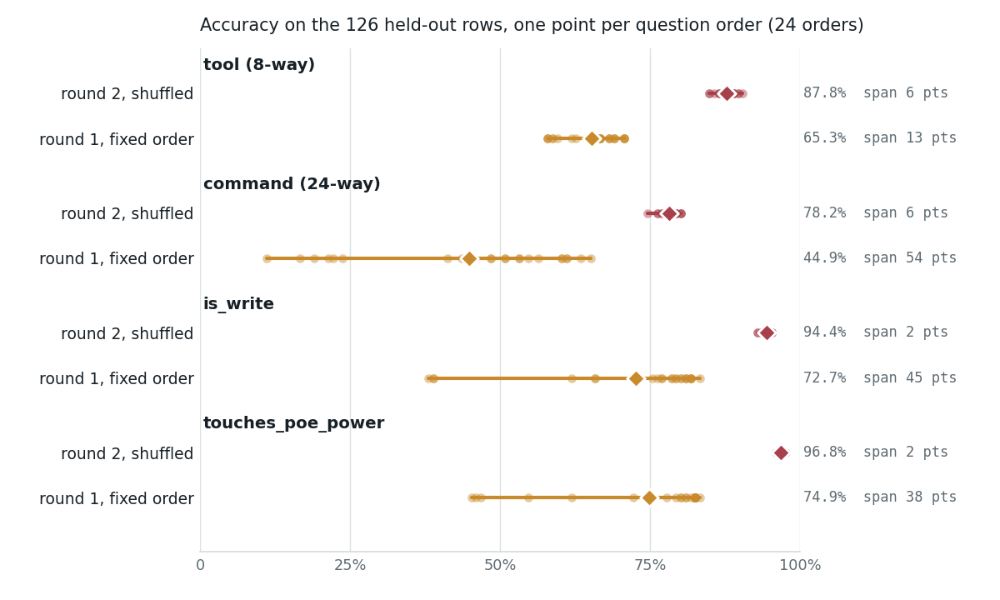

A packed battery must be asked the way it was trained
The study's round-1 encoder answers a different question when you ask it one question at a time instead of four in one sequence: the 24-way command question falls from 65.1% to 31.7% on the same held-out rows. This page measures the effect across all 24 question orders and three pack sizes, locates it in the training data, and prices the two fixes.
touches_poe_power packed then alone: shuffling fixed the order, not the pack sizeresults/packed-vs-single.json, a receipt produced for this note: both fine-tuned bundles, the 126 held-out rows of the grouped split, each battery asked in all 24 question orders and in three pack sizes, 297 s on the development host's GB10 GPU. Training-set shapes are from results/pack-shapes.json, run cost from runs/*/report.json, board latency from results/latency-cpu-board.json. The bundles come from a study that served typed, calibrated decisions beside an offline network-management assistant on a Qualcomm board, where a 150M encoder was fine-tuned to answer its router battery: the write-up has the recipe and the accuracy tables this note dissects, and the repository has the receipts.What "packed" means here
The typed-decisions recipe answers every question about one state in a single forward pass. The collator writes one token sequence, the backbone reads it once, and a small multilayer perceptron (MLP) head scores each option. The unit of work is the whole battery, not the question.
The measurement
Both bundles, the 126 held-out rows, the same questions and the same option strings. "Packed" is the battery in the order it was trained on. "Alone" is the same question with nothing else in the sequence, which is what a caller does when it wants one answer.

| question | round 1 packed | round 1 alone | round 2 packed | round 2 alone |
|---|---|---|---|---|
| tool (8-way) | 70.6% | 65.9% | 88.1% | 85.7% |
| command (24-way) | 65.1% | 31.7% | 77.8% | 73.0% |
is_write | 81.7% | 37.3% | 95.2% | 46.0% |
touches_poe_power | 82.5% | 82.5% | 96.8% | 23.0% |
What the lone questions answer instead: round 1 says none_of_these on 119 of the 126 command rows and "no" to is_write on 124; round 2 says "no" to is_write on 97 and "yes" to touches_poe_power on 119.
NOUL is Jev's yes/no question type, one probability. Accuracy is plain gold accuracy, the row's listed alternatives not allowed, so these cells are directly comparable with the fine-tune page's first column. The held-out rows are 25% of the evaluation set, grouped by seed request; 77 of 126 are writes and 22 touch PoE power, so "no" on every row scores 38.9% on is_write and 82.5% on touches_poe_power. That second number is exactly round 1's alone score on that question: it is the prior, not an answer.
The preprint records this defect as 55% falling to 7%. That came from a 40-row probe run while the bug was being found, which also showed tool unchanged at 78% and is_write dropping from 75% to 28%. The full 126-row rerun above says 65.1% to 31.7%, and the gap between 7% and 31.7% is a base rate, not a disagreement. 34 of the 126 held-out rows have none_of_these as the gold command; round 1 asked alone answers none_of_these on 119 rows, so it gets all 34 of those right and only 6 of the 92 rows that map to a real command: 6.5%. The probe's 40 rows had no none_of_these golds at all, so its 7% is that 6.5% seen without the prior. On the 92 real-command rows the packed scores are 59.8% for round 1 and 75.0% for round 2; asked alone they are 6.5% and 65.2%.
The collapse is confident. Round 1's alone answers on the command question average 0.896 top-class probability against 31.7% accuracy, higher than the 0.636 it reports when asked packed and right twice as often. Temperature scaling cannot see this: the model is not uncertain, it is answering a different question. That is the practical danger, because a gate reading p > 0.9 off a mis-shaped call sees nothing wrong.
Order inside the pack
Asking each battery in all 24 orders of its four questions separates "this head memorised a slot" from "this head memorised a layout".

| question | trained | mean | min | max | s1 | s2 | s3 | s4 |
|---|---|---|---|---|---|---|---|---|
| tool, round 1 | 70.6% | 65.3% | 57.9% | 70.6% | 70.1% | 64.6% | 62.7% | 64.0% |
| command, round 1 | 65.1% | 44.9% | 11.1% | 65.1% | 46.7% | 45.6% | 45.8% | 41.4% |
is_write, round 1 | 81.7% | 72.7% | 38.1% | 83.3% | 63.0% | 72.6% | 78.3% | 76.9% |
touches_poe_power, round 1 | 82.5% | 74.9% | 45.2% | 83.3% | 65.5% | 73.4% | 78.0% | 82.5% |
| tool, round 2 | 88.1% | 87.8% | 84.9% | 90.5% | 88.4% | 88.5% | 87.4% | 86.8% |
| command, round 2 | 77.8% | 78.2% | 74.6% | 80.2% | 77.1% | 78.8% | 79.0% | 78.0% |
is_write, round 2 | 95.2% | 94.4% | 92.9% | 95.2% | 94.6% | 94.0% | 94.8% | 94.0% |
touches_poe_power, round 2 | 96.8% | 96.8% | 96.0% | 97.6% | 96.7% | 97.0% | 96.8% | 96.8% |
trained is the order the bundle was trained on; mean, min and max run over all 24 orders; s1 to s4 average the six orders that put the question in that slot, so they confound the slot with the questions around it. Each cell is 126 rows per order, 756 rows per slot.
Two things follow. First, round 1's trained order is the best of the 24 for the command question, the only one that reaches 65.1%; its slot profile, on the other hand, is nearly flat at 41% to 47%. So "the head is position-aware" understates it. The head did not learn a slot index, it learned one layout, and the trained order is the single arrangement in which it performs. The two yes/no questions do show a slot gradient, rising from 63.0% and 65.5% in slot 1 to 78.3% and 82.5% in the slots they were trained in, which is what a pure slot effect looks like, but that gradient is small next to the 54-point spread on the command question.
Second, shuffling works, and works completely, inside the pack size it saw. Round 2's spread is 2 to 6 points, its trained order is not special (18 of the other 23 orders match or beat it), and the slot columns are flat to within two points. For a question asked in a fixed four-question battery, the defect is closed.
Why the head could do this
The answer is in what each training set contained, not in the architecture.
| training set | 4-question packs | orders | 1-question packs | what a 1-question pack meant |
|---|---|---|---|---|
data/td-desc, round 1 | 985 | 1 | 1,620 | a confirm-gate question, 1,040 of them gold "no" |
data/td-desc-shuf, round 2 | 1,970 | 24 | 0 | never seen |
data/td-gate, gate-only | 0 | n/a | 2,080 | the only shape, 1,040 gold "no" |
Round 1's 985 router packs always ran tool, command, is_write, touches_poe_power; round 2's 1,970 packs put the command question in slot 1 on 230 examples, slot 2 on 1,231, slot 3 on 237 and slot 4 on 272, because the fix emits one permuted copy and keeps the original.
Round 1 therefore had a perfectly good rule available: a sequence holding one question is a gate question, and the gate's answer is usually no. It applies that rule. Asked is_write alone it says "no" on 124 of 126 rows; asked the command question alone it says none_of_these on 119 of 126, which is the closest thing to "no" that a 24-way question offers. The model is not broken, it is generalising from the shapes it was shown.
Round 2 saw no single-question packs at all, so its behaviour there is unconstrained rather than mislearned, and it goes the other way: asked touches_poe_power alone it answers "yes" on 119 of 126 rows, inverting a question it gets right 96.8% of the time in the battery. Removing the misleading shape did not replace it with a good one.
The two fixes and what they cost
| fix | what changes | cost | what it buys |
|---|---|---|---|
| shuffle the question order in training make_td_data.py --shuffle-questions 1 | each training example emitted once more with its four questions permuted: 985 packs become 1,970, 7,880 questions | 12 min becomes 23 min on one GB10 GPU (652 steps to 992, 14.3 to 14.4 GiB peak, $0.79 to $1.51 by the trainer's H100-equivalent estimate) | order spread drops from 54 to 6 points; accuracy rises on every question |
| evaluate packed, as trained backend packs first, falls back per question | nothing in training; the caller sends the whole battery even when it wants one answer | on the board CPU at four threads the packed four-question battery is 2.51 s against 126 ms for one NOUL, so a single answer costs 20 times more | recovers round 1 from 31.7% to 65.1% with no retraining |
Round 2 also went from 4 to 8 epochs, so its gains are shuffling and training length together, not shuffling alone; this note does not separate them, and a single seed sits under both runs. The training cost line is one GB10 in bf16 with the trainer's own wall clock. The latency line is measured on the board's CPU with the production NPU (neural processing unit) tenant running.
The second fix is what the study shipped for evaluation, and it is a real constraint on the deployment, not a free repair. The router battery costs 2.51 s packed on the board against about 5.1 s for the 4B readout's four questions, so a two-fold advantage survives packing; the ten-fold advantage, 126 ms against 1.24 s per question, exists only for a caller that asks one question at a time, which is exactly the call this model answers badly. The way out is to make the shape the caller wants the shape the model was trained on, which is a training decision, not an inference one.
What shuffling does not fix
The production pre-turn hook does not ask four questions. It asks two, tool and is_write, and uses them to pick the tool schemas loaded into the agent's 4K context and to add a one-line hint. That pack size appears in neither training set.
| pack asked | round 1 tool | round 1 is_write | round 2 tool | round 2 is_write |
|---|---|---|---|---|
| 4 questions, trained order | 70.6% | 81.7% | 88.1% | 95.2% |
2 questions: tool, is_write | 65.9% | 79.4% | 84.9% | 89.7% |
| 2 questions, reversed | 58.7% | 38.9% | 85.7% | 66.7% |
| 1 question, alone | 65.9% | 37.3% | 85.7% | 46.0% |
Round 2 keeps the tool question across every shape, within four points. It does not keep is_write: 95.2% in the battery, 89.7% in the two-question pack the hook actually sends, 66.7% if that pack is written in the other order, 46.0% alone. Shuffling taught the model 24 arrangements of one pack size. It did not teach it that a question means the same thing in a pack of two.
The sharpest version of the lesson: the defect was never about order. It is that the packed format makes the whole battery the input, and a span head will use every part of that input it is allowed to use. Order shuffling removes one degree of freedom. Pack size is another, and it is the one the production hook varies.
Guidance for anyone using a span-head recipe
- Ask in the shape you trained. Record the battery in the bundle's config next to the temperature, so a caller can see the shape rather than infer it.
open_jev_config.jsoncurrently records states, questions, epochs, augmentation and seed, but not the pack shapes. - Shuffle the question order, and sample the subset too. If callers will ask two of your four questions, train on two of your four questions. The cost is the same one extra copy per example.
- Probe before you trust an evaluation. Run the same rows twice, once packed and once one question at a time. If the two disagree, your harness is a variable in your results. It costs a few seconds per bundle on a GPU: the median call is 39 ms packed and 23 ms for a lone command question over these 126 rows.
- Expect the failure to be confident. 0.896 mean probability at 31.7% accuracy. Calibration is fitted on in-shape data and says nothing about a shape it never saw, so a confidence threshold will not catch this.
- Watch the length refusal. Packing is bounded: a 10-question pack drawn from these questions is 2,576 tokens for round 1 and 2,974 for round 2 against a 2,048
max_len, and the trainer records the refusal rather than truncating. Anything that must scale past the window has to split, which reintroduces the problem. - Keep the fallback honest. The study's backend tries the packed call first and drops to one question per pass only when the sequence does not fit, and it records which path ran in
mode. A silent fallback would have hidden this for a second time.
Draft: a contribution to the trainer
The trainer already has the right seam. augment.py holds gold-preserving operations that rewrite one question (shuffle its options, paraphrase its instructions, drop distractors, relabel score levels, negate a yes/no), and the training loop maps them over e.questions one question at a time (train_encoder.py, line 118), which preserves the list and therefore the layout. What is missing is an operation on the question list. Its natural home is beside the others, applied at the same call site.
Patch sketch
Two notes a reviewer would want. The operations belong in augment.py rather than in a dataset builder because the layout is a training-time property of the pack, not of the corpus, and because a recipe user who builds their own JSONL should get the fix without regenerating it. And subsample_questions changes the number of questions per step, which changes the loss denominator: decision_loss already averages over valid questions, so the effect is a smaller effective batch on subsetted steps, worth saying in the pull request rather than hiding.
Reproduce
The receipt holds every condition, including the per-order tables and the prediction histograms this page quotes. TORCH_DISABLE_NATIVE_JIT=1 and TORCHDYNAMO_DISABLE=1 are required on the development host, as for every other run in this study.
Limits
- One recipe, one backbone, one dataset, one seed per round. The two rounds differ in epochs as well as in shuffling, so the training-side fix is not isolated.
- 126 held-out rows: a few points of difference in any cell is noise, though the effects this page is about are 33 to 74 points wide.
- The accuracy runs are on the development host; the board contributed the latency line only, and no board accuracy run exists.
- Authored labels are LLM-written and LLM-verified, with human review pending.
- Untested here: whether subset augmentation actually recovers the two-question pack, which is the obvious next run and the reason the patch above is a draft rather than a claim.